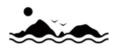
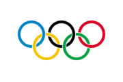
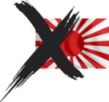
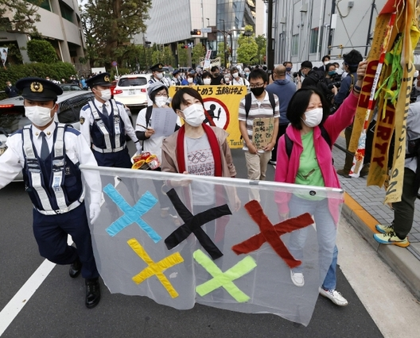

ABOUT
국제올림픽위원회는 올림픽을 수단으로 벌어지는 일본의 정치적 행위를 묵인 해선 안된다.
-

독도, 한국의 영토
독도는 명백한 대한민국의 고유영토입니다.
-

올림픽 정신
IOC는 정치적 중립을 유지해야 합니다.
-

욱일기 허용 철회
제국주의 전범기의 사용
명백한 전쟁범죄 책임회피 행위입니다.
독일에서 열리는 올림픽에서 알자스-로렌에 대한 영유권을 주장하고, 나치 전범기가 응원에
사용되는것을 상상할수 있는가? 이와 같이 용인되어선 안될 일이 국제올림픽위원회의
무책임한 방치속에 도쿄올림픽에서 벌어지는 중이다.
https://olympics.com/tokyo-2020/en/torch/route/
도교올림픽의 성화봉송 경로가 소개된 공식 홈페이지에 대한민국의 영토인 독도를 마치
일본의 영토인 것처럼 표시한 지도가 업로드 되었다.
뿐만 아니라 도쿄올림픽조직위원회는 2 차세계대전에서 사용된 제국주의 전범기를 올림픽
응원에서 사용하도록 허용했다.
이는 올림픽을 수단으로 타국의 영토에 대한 비합리적인 영유권을 주장하고 전쟁범죄에 대한
책임을 회피하는 정치적인 행위임이 명백하다.
[50 조 2 항: 올림픽 장소, 베뉴 및 기타 구역에서 어떠한 형태의 시위나 정치적 종교적 혹은
인종적 선전도 허용되지 않는다.]
올림픽 헌장에서는 올림픽을 국가의 정치적인 선전의 수단으로 사용하는 것을 금지하고
있다. 그러나 도쿄올림픽을 두고 일어나는 일본정부의 행위는 올림픽 헌장에 명시된 올림픽
정신을 정면으로 위배하는 행위이다.
국제올림픽위원회는 일본의 올림픽을 정치적으로 이용하는 행태를 저지함으로서 적극적으로
올림픽 정신을 수호하는 역할을 다하여야 한다.
지난 2018 평창올림픽에서는 남북단일팀 한반도기에 표시된 독도에 대해 삭제를 요구한
일본의 비합리적인 지적에 국제올림픽위원회는 지도에 독도를 표시한 것을 “정치적 행위”로
규정하고 삭제를 권고했었으며, 당시 대한한국 정부는 올림픽 정신을 지키기 위해 기꺼이
국제올림픽위원회 측의 요구를 수용했다.
왜 지금의 국제올림픽위원회는 올림픽 정신을 지키는 행동을 하지 못하는가?
PRESS
언론보도

한인 모임, IOC 본부서 독도 표기ㆍ욱일기 사용 규탄 집회
로잔 본부 앞에서 18일 집회 예정
'IOC 규탄 한인모임'이 18일(현지시간) 스위스 로잔의 국제올림픽위원회(IOC) 본부 앞에서 일본 정부의 독도 표기와 욱일기 사용을 규탄하는 집회를 연다고 17일 밝혔다.
이번 집회는 도쿄올림픽 조직위원회가 공식 홈페이지 내 성화봉송로 지도에 독도를 일본 영토인 것처럼 표기한 것에 관해 IOC 측에 직접 항의 메시지를 전달하려는 목적이다.
모임 측은 경기장 반입 금지 물품에서 욱일기를 제외한 것과 관련해서도 항의할 예정이다.
모임 관계자는 “평창 동계올림픽 당시 IOC는 일본의 문제 제기를 받아들여 남북 단일팀 한반도기 속 독도를 빼라고 권고했다”며 “도쿄올림픽 홈페이지에 그려진 독도는 왜 모른 척하는지 묻고 싶어 집회를 기획하게 됐다”고 설명했다.
고대영 기자 이투데이 글로벌경제